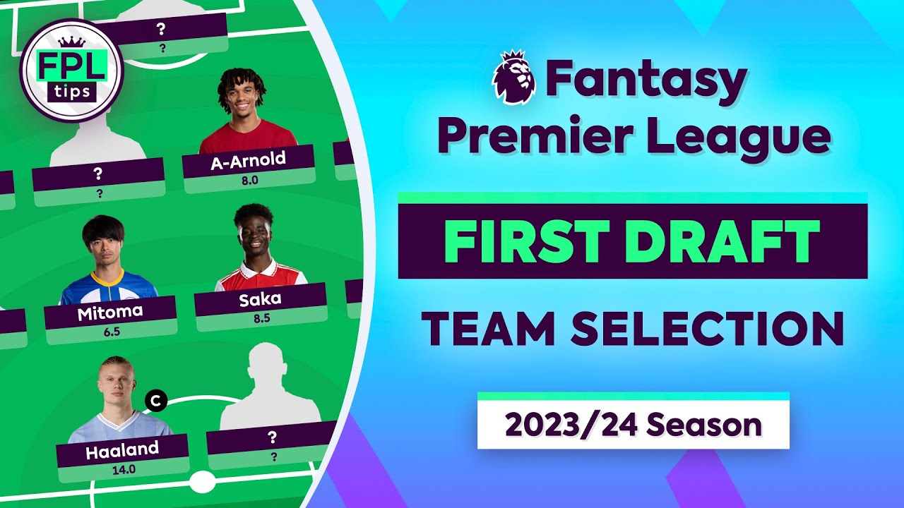
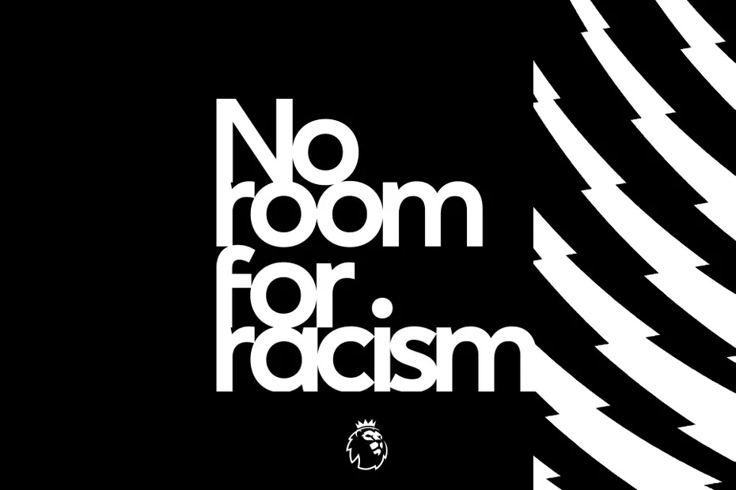
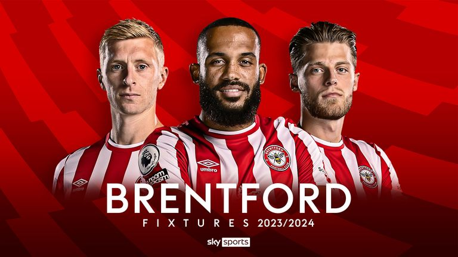
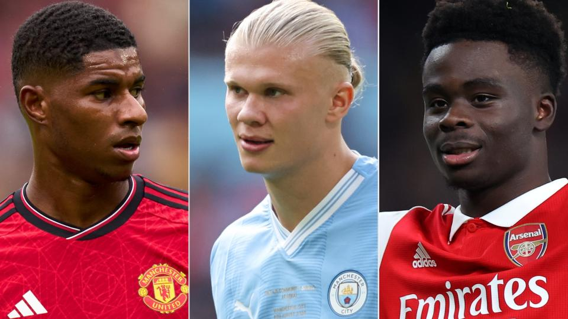
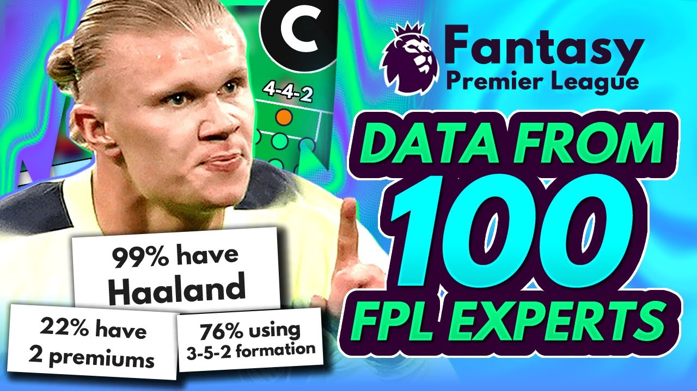

Managers in Fantasy Premier League who still have their first Wildcard to play should consider using the chip in Gameweek 10.This allows them to take advantage of swings in fixtures for a number of clubs, including Arsenal, Brighton & Hove Albion and West Ham United. More...
10.10.2023.

Last weekend and through to 23 October, the Premier League and its 20 clubs are highlighting No Room For Racism, demonstrating our ongoing support for equality, diversity and inclusion across all areas of football.Support for the campaign was clear at Matchweek 8 fixtures, both on and off the pitch as players and supporters were united against all forms of discrimination More...
10.10.2023.

"If you can get the player and staff care correct, there's every chance that you can optimize the potential of the people who then have to go and do the hard bit, which is cross the white line and play in front of a global audience on a weekly basis." More...
10.10.2023.

Newcastle United stars Dan Burn and Sean Longstaff walked into a mental health workshop at Newcastle United Foundation to a round of applause and cheers reminiscent of a matchday at St James Park.The welcome for the local heroes, from a room of individuals who once suffered in silence, epitomised the impact of the Foundations mental health group, Football Talks. More...
10.10.2023.

Haaland is definitely a good captaincy option but perhaps not an autopick. Despite his recent form, he's still capable of producing multiple returns in any match. I'm captaining him against Brighton & Hove Albion and AFC Bournemouth and looking at Mohamed Salah (£12.6m) or Son Heung-min (£9.5m) as alternatives in the other weeks. More...
10.10.2023.